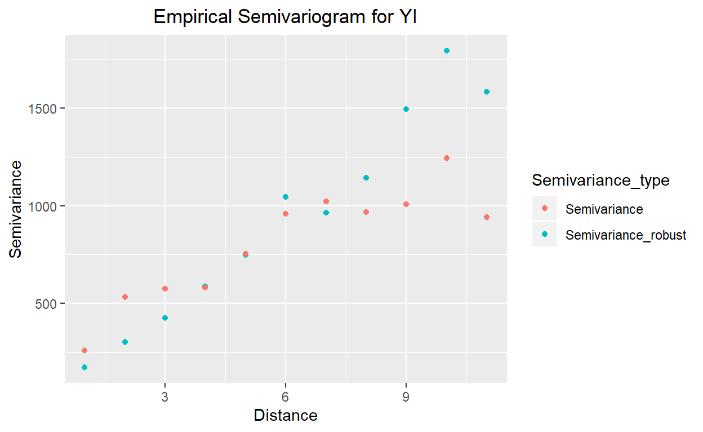
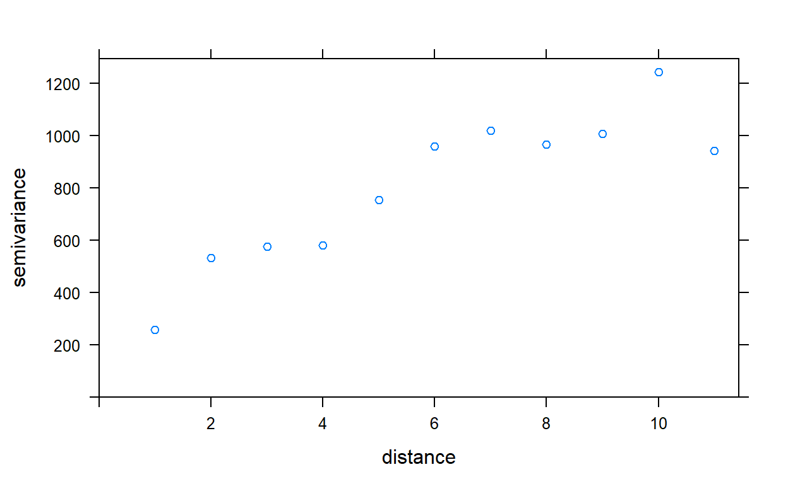
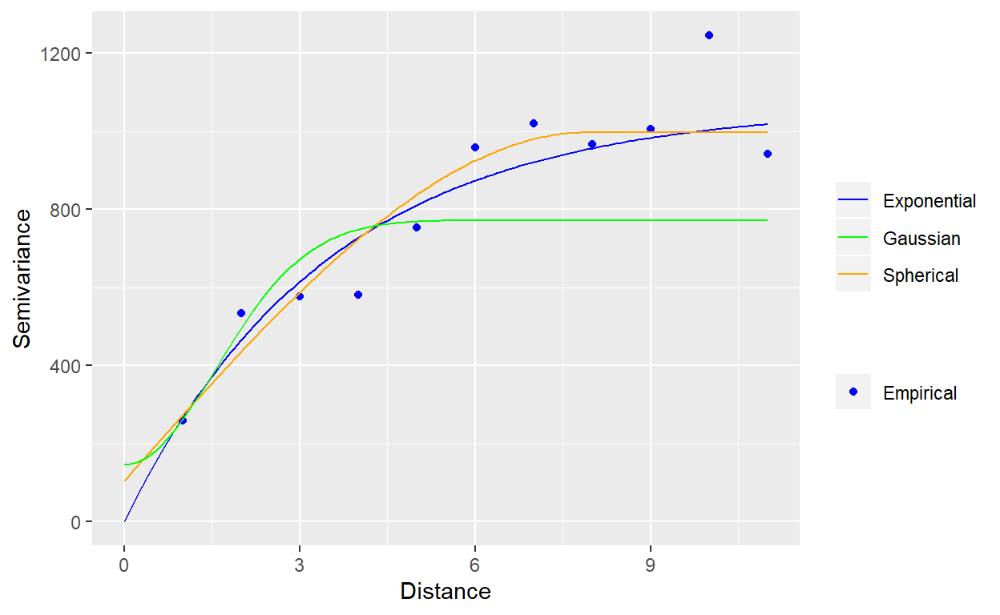

Here is the R code to download the required packages for this exercise.
# install package manager 'pacman'
if (!require(pacman)){
install.packages('pacman')
}## Loading required package: pacman# load packages needed for this exercise
library(pacman)
p_load(tidyverse,
lctools, # to calculate Moran's I
spdep, # to calculate geary's c
geoR, # to compute variogram
gridExtra, # to stack plots
gstat, automap, # packages for variogram model selection
sp # need a function called `coordinates`
)This is equivalent to data step in SAS. Here, the data is entered inside a function called tibble.
# Enter data
a <- tibble(I = 1:16, YI = c(41, 60, 81, 22, 8, 20, 28, 2,
0, 2, 2, 8, 0, 43, 61, 50)) %>%
# creat new variable East and North
mutate(East = 1,
North = I)
# print the data
a# visualize the data
ggplot(data = a) +
geom_point(mapping = aes(x = East, y = North, size = YI, color = YI)) +
ggtitle("Spatial Distribution of YI Observation") +
theme(plot.title = element_text(hjust = 0.5))# calculate Moran's I
Coords <- a %>%
dplyr::select(East, North)
mI <- moransI(Coords, Bandwidth = 1, a$YI)
# print Moran's I table
moran.table <- tribble(
~`Moran's I`, ~`Expected I`, ~`Z randomization`, ~`P value randomization`,
#------------/--------------/-------------------/------------------------
mI$Morans.I, mI$Expected.I, mI$z.randomization, mI$p.value.randomization
)
moran.table# create Moran's I scatter plot
l.moran <- l.moransI(Coords, Bandwidth = 1, a$YI)# calculate geary's c
Coords_num <- coordinates(Coords)
# create an object of class 'nb' so that it can be used with function from packege `spdep`
Coords_nb <- knn2nb(knearneigh(Coords_num))
# create a 'listw' object for use in the function `geary.test`
coords_listw <- nb2listw(Coords_nb)
gearyC <- geary.test(a$YI, coords_listw, alternative = "two.sided")
gearyC##
## Geary C test under randomisation
##
## data: a$YI
## weights: coords_listw
##
## Geary C statistic standard deviate = 2.5826, p-value = 0.009806
## alternative hypothesis: two.sided
## sample estimates:
## Geary C statistic Expectation Variance
## 0.37085605 1.00000000 0.05934473We will use the package geoR to construct empricial variogram, and then draw them using package ggplot2.
v1 <- variog(coords = Coords_num, data = a$YI, breaks = seq(0.5, 15.5),
max.dist = 11)## variog: computing omnidirectional variogram# extract data from object v1 for plotting
v1_plot_data <- cbind(v1$u, v1$v, v1$n) %>%
as.data.frame() %>%
dplyr::rename(Distance = V1,
Semivariance = V2,
Pair_count = V3)
# in the table below, gamma is semivariance
v1_plot_data# plot variogram
v1_plot_vario <- ggplot(data = v1_plot_data) +
geom_point(mapping = aes(x = Distance, y = Semivariance)) +
ggtitle("Empirical Semivariogram of YI") +
theme(plot.title = element_text(hjust = 0.5))
# plot pair counts
v1_plot_pair_count <- ggplot(data = v1_plot_data) +
geom_col(mapping = aes(x = Distance, y = Pair_count), width = 0.01, color = "blue")
# stack two plots
grid.arrange(v1_plot_vario, v1_plot_pair_count,
ncol = 1, heights = c(3, 1))Plot robust and classical variogram together.
# fit robust variogram
v1_robust <- variog(coords = Coords_num, data = a$YI, breaks = seq(0.5, 15.5),
max.dist = 11, estimator.type = "modulus")## variog: computing omnidirectional variogram# extract the data
v1_robust_data <- cbind(v1_robust$u, v1_robust$v, v1_robust$n) %>%
as.data.frame() %>%
dplyr::rename(Distance = V1,
Semivariance = V2,
Pair_count = V3)
# plot robust variogram
v1_robust_vario <- ggplot(data = v1_robust_data) +
geom_point(mapping = aes(x = Distance, y = Semivariance)) +
ggtitle("Empirical Semivariogram of YI - Robust estimation") +
theme(plot.title = element_text(hjust = 0.5))
v1_robust_vario# combine robust and classical variogram
var_comb <- v1_robust_data %>%
# combine robust and classical variogram datasets
dplyr::rename(Semivariance_robust = Semivariance) %>%
bind_cols(dplyr::select(v1_plot_data, Semivariance)) %>%
gather(key = "Semivariance_type", value = "Semivariance", -c(Distance, Pair_count)) %>%
# plot
ggplot() +
geom_point(mapping = aes(x = Distance, y = Semivariance, color = Semivariance_type)) +
ggtitle("Empirical Semivariogram for YI") +
theme(plot.title = element_text(hjust = 0.5))
var_comb
We will use the package gstat and automap for variogram model selection
# specify coordinates in the dataset
coordinates(a) = ~East+North
# select the best model out of exponential, spherical, and gaussian
autofitVariogram(YI ~ East + North, a, model = c("Sph", "Exp", "Gau"))## $exp_var
## np dist gamma dir.hor dir.ver id
## 1 15 1 259.9333 0 0 var1
## 2 14 2 536.4286 0 0 var1
## 3 13 3 574.6538 0 0 var1
## 4 12 4 571.5000 0 0 var1
## 5 11 5 743.7727 0 0 var1
##
## $var_model
## model psill range
## 1 Nug 0.0000 0.000000
## 2 Exp 835.8984 2.488287
##
## $sserr
## [1] 31108.23
##
## attr(,"class")
## [1] "autofitVariogram" "list"# fit empirical variogram
v_emp <- variogram(YI ~ East + North, data = a, cutoff = 11)
v_empplot(v_emp)
# fit exponential variogram
v_exp <- fit.variogram(v_emp, vgm("Exp"))
v_exp# fit spherical and gaussian
v_sph <- fit.variogram(v_emp, vgm("Sph"))
v_gau <- fit.variogram(v_emp, vgm("Gau"))
# extract plotting data from fitted variograms
v_exp_line <- variogramLine(v_exp, maxdist = 11)
v_sph_line <- variogramLine(v_sph, maxdist = 11)
v_gau_line <- variogramLine(v_gau, maxdist = 11)
# plot emprical and fitted variograms together
# specify color for legends
legend_color <- c("Empirical" = "blue", "Exponential" = "blue",
"Spherical" = "orange", "Gaussian" = "green")
ggplot(data = v_emp) +
geom_point(mapping = aes(x = dist, y = gamma, fill = "Empirical"), color = "blue") +
geom_line(data = v_exp_line, mapping = aes(x = dist, y = gamma, color = "Exponential")) +
geom_line(data = v_sph_line, mapping = aes(x = dist, y = gamma, color = "Spherical")) +
geom_line(data = v_gau_line, mapping = aes(x = dist, y = gamma, color = "Gaussian")) +
scale_color_manual(name = "", values = legend_color) +
scale_fill_manual(name = "", values = legend_color) +
labs(x = "Distance",
y = "Semivariance")